한번 맡은 일은 끝까지 보고, 같은 실수를 반복하지 않기 위해 늘 기록합니다.
두 번의 장애가 모두 코드가 아니라 자원과 네트워크 정책에서 왔습니다. 그 뒤로는 문제를 만나면 애플리케이션 쪽인지 그 아래쪽인지부터 나눠 봅니다.
운영체제, 네트워크프로그래밍, 데이터통신, 데이터베이스, 알고리즘을 A+로 이수했습니다. 5학기 연속 성적 우수 장학금을 받았습니다.
문제를 푸는 것만큼 중요한 것이 다음 사람이 알아볼 수 있게 남기는 일이라고 생각합니다. 매니페스트와 문서에 판단 근거를 남기고 Slack으로 결과를 공유합니다.
VM에서 crontab으로 돌던 배치와 상주 봇을 네이버 클라우드 쿠버네티스로 옮기고, Argo CD 기반 GitOps 배포 체계 위에서 운영한 실무 프로젝트. 컨테이너 이미지 빌드부터 배포, 시크릿 관리, 장애 대응까지 단독 수행했습니다.
회사에는 이미 쿠버네티스와 Argo CD 기반 배포 인프라가 있었지만, 제가 만든 파이프라인만 그 밖에서 VM crontab으로 돌고 있었습니다. 서버에 접속해 스크립트를 고치는 방식이라 배포 이력이 남지 않았습니다.
배치는 CronJob, 상시 대기하는 Slack 봇은 Deployment, 창업 지원 서비스는 웹 Deployment와 뉴스레터 CronJob으로 구성해 워크로드 3종을 옮겼습니다.
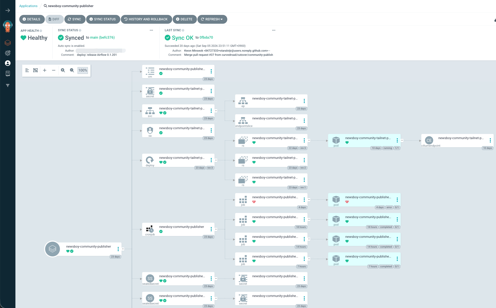
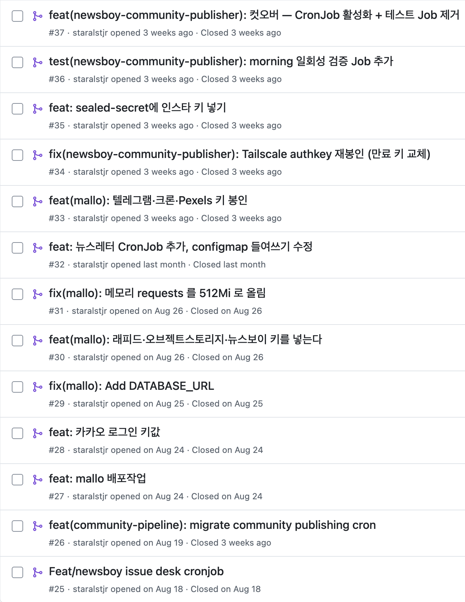
| VM (기존) | 쿠버네티스 (이관 후) |
|---|---|
| flock 중복 실행 방지 | concurrencyPolicy |
| crontab 스케줄 | CronJob schedule |
| 로그 파일 회전 | 표준 출력 |
| .env 파일 | ConfigMap과 봉인된 시크릿 |
GitOps는 모든 것을 Git에 선언해야 하는데, DB 접속 정보와 토큰은 평문으로 올릴 수 없었습니다. 쿠버네티스 기본 Secret은 인코딩일 뿐이라 그대로 커밋하면 유출입니다. 게다가 제 계정은 클러스터 접근이 막혀 있어 붙어서 봉인할 수도 없었습니다.
배포를 명령이 아니라 선언으로 바꾸면 추적과 자가 치유가 따라옵니다. 리소스를 고르는 일은 복사가 아니라 워크로드 성격을 판단하는 일이었습니다.
이 워크로드는 한 번 실행에 LLM 호출 비용이 큽니다. 팀 표준대로 재시도를 두면 실패 시 비용이 배로 늘고, 게시 작업이라 중복 게시 위험도 있었습니다.
스케줄도 문제였습니다. CronJob의 schedule은 기본 UTC이고 타임존 필드는 특정 버전 이상에서만 동작해 클러스터 버전에 의존하게 됩니다.
컷오버는 더 위험했습니다. 이 배치는 결과를 실제로 기록하기 때문에 VM과 쿠버네티스가 동시에 돌면 같은 내용이 두 번 올라갑니다.
운영 중인 작업을 옮기는 일은 만드는 일과 다릅니다. 순서를 정하는 것이 절반이었습니다.
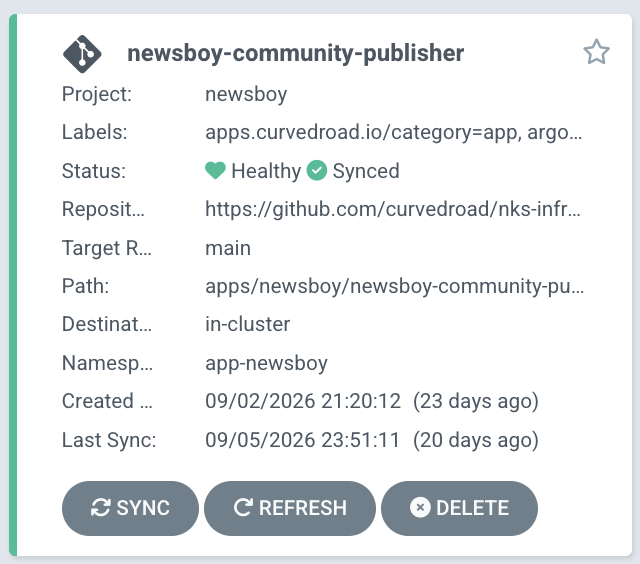
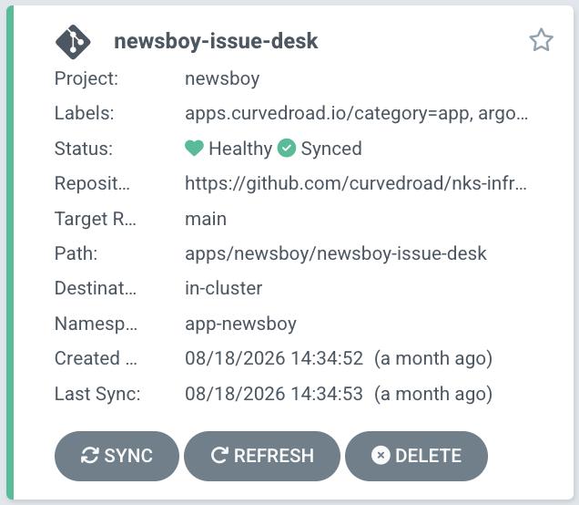
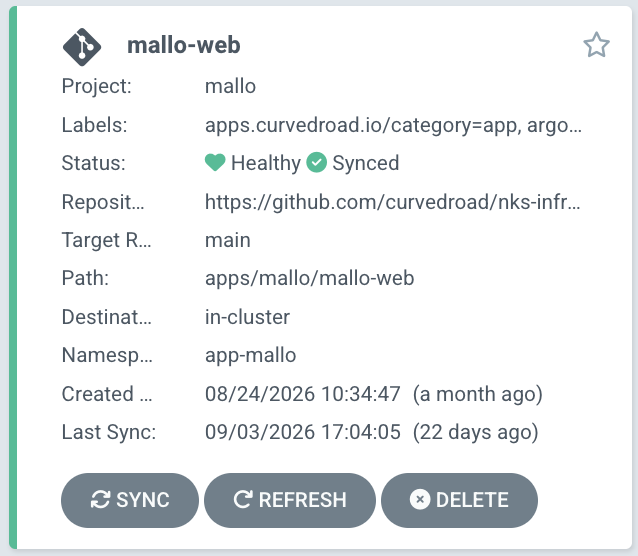
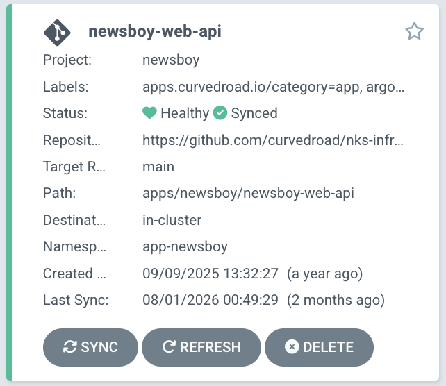
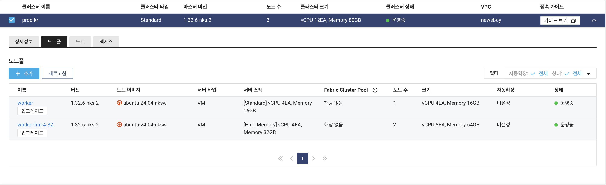
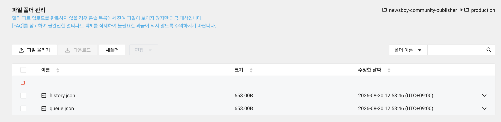
클러스터를 직접 조작할 수 없어 관측과 조작을 전부 Argo CD와 Git으로만 해야 했습니다. 그런데 정상으로 보인다고 일이 잘 된 것은 아니었습니다. 파드가 정상 종료 코드로 끝나면 내부에서 실패했어도 정상으로 표시되고, 완료된 파드의 로그는 사라집니다.
보이는 상태와 실제 상태는 다를 수 있습니다. 도구가 주는 정상은 리소스가 정상이라는 뜻이지 일이 잘 됐다는 뜻이 아닙니다.
사건을 검색하면 위키 형식이나 파편화된 기사로만 정보를 얻어야 했기에, 한 페이지로 사건을 이해할 수 있는 서비스를 기획하고 개발했습니다.
흩어진 뉴스를 사건 단위로 묶어 전말과 인물 발언, 시간순 전개, 커뮤니티 반응을 자동 생성하는 파이프라인을 단독으로 설계하고 구현했습니다.
운영 DB에서 읽기 전용으로 원천 데이터를 가져와 정제한 뒤, 분리된 결과 DB의 22개 테이블에 적재합니다. 기획과 와이어프레임부터 DB 설계, 서버 환경 구성, 백엔드와 화면 개발까지 디자인을 뺀 전 과정을 맡았습니다.
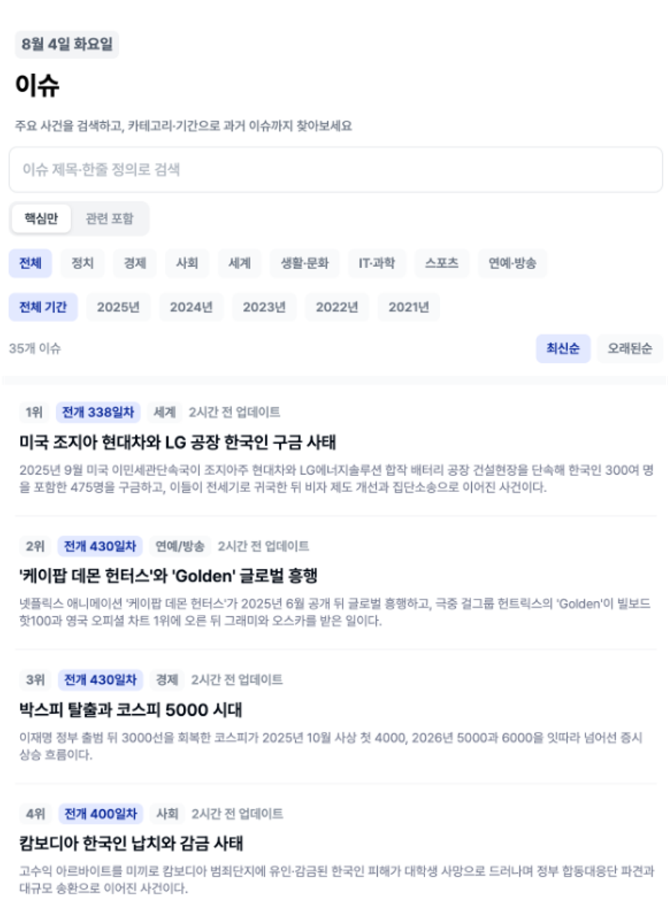
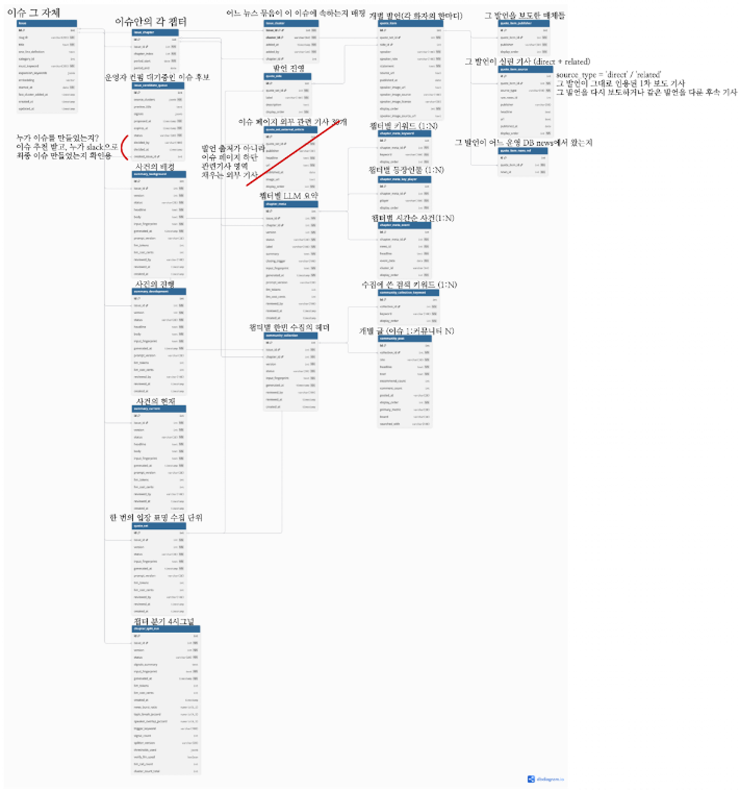
장애를 기다렸다가 고치는 것보다, 처음부터 실수해도 서비스 DB는 살리는 경계를 만드는 일이 중요했습니다. 모델 출력을 믿지 않고 코드가 검증하는 지점을 정해 두면 무인 운영에서도 결과를 신뢰할 수 있었습니다.
반복 게시 작업을 배치 파이프라인으로 자동화하고, 메모리 과부하와 IP 차단을 겪으며 실행 환경을 옮긴 경험입니다.
뉴스보이 기사를 커뮤니티에 올려 서비스 유입을 만드는 일을 직접 제안해 기획하고 자동화했습니다. 수집과 분석, 리라이트, 게시로 작동하는 배치 파이프라인으로 아침과 점심, 저녁에 실행됩니다.
실행 결과와 장애는 Slack Webhook으로 상시 확인합니다.
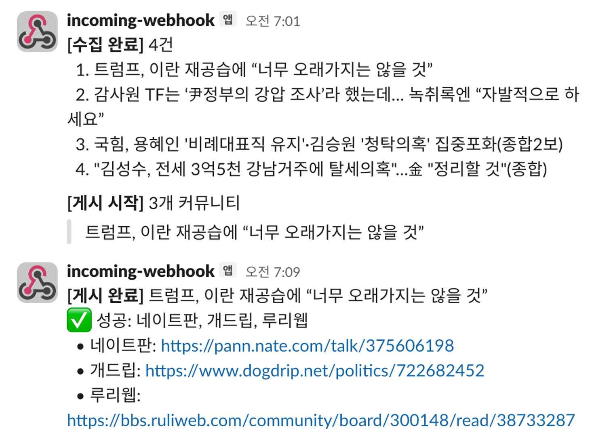
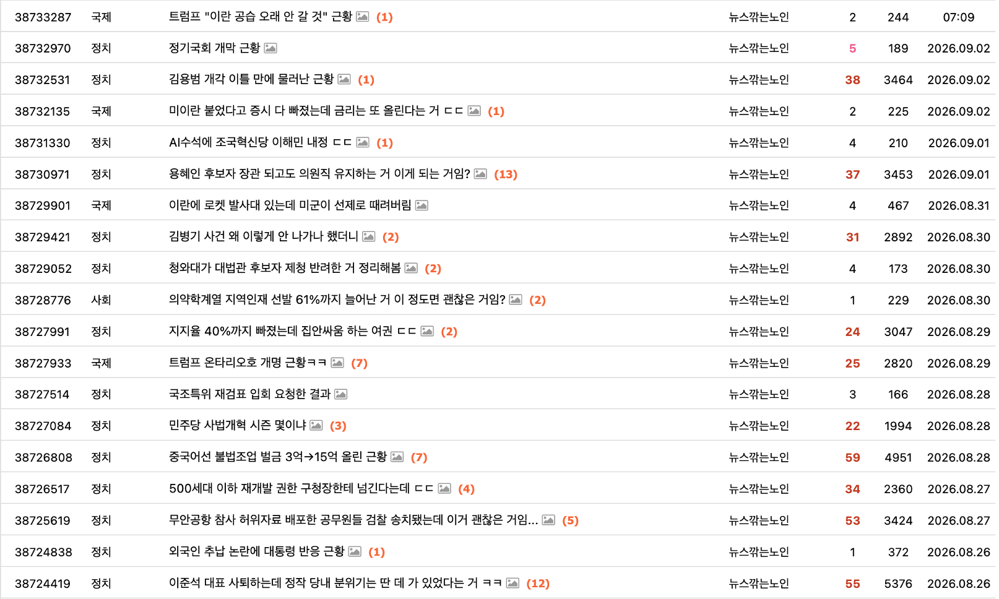
세 번째 시도에서 두 문제가 동시에 풀렸고 파이프라인을 다시 가동했습니다.
오류 원인이 코드가 아니라 자원과 네트워크일 수 있습니다. 알림이 없으면 장애를 늦게 압니다. 실행 결과를 Slack으로 밀어 보내 찾아가지 않아도 실패가 보이게 만들었습니다.
말로 설명하면 사업계획서가 만들어지는 서비스. 음성 전사부터 문서 생성과 내려받기, 뉴스레터 정기 발송 배치와 결제까지 전 구간을 개발했습니다.
창업자가 말한 내용으로 사업계획서를 만들어 주는 서비스입니다. 사업계획서 생성과 맞춤 뉴스레터, 홍보 콘텐츠 자동 제작 세 상품을 운영합니다.
음성 전사부터 문서 생성과 내려받기, 구독 결제와 환불 웹훅까지 전 구간을 맡았습니다. 뉴스레터는 쿠버네티스 CronJob이 정해진 시각에 호출하고, 사내 뉴스 검색 서비스를 연동해 근거를 확보합니다.
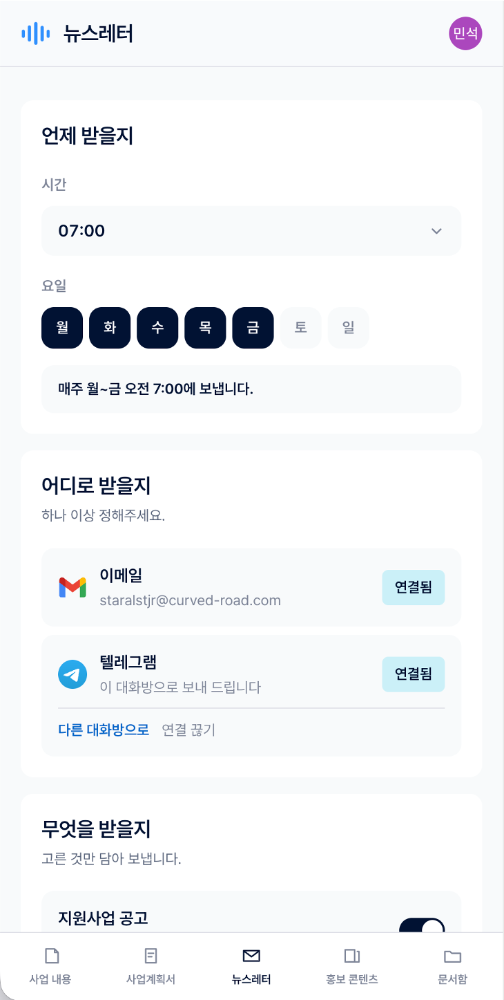
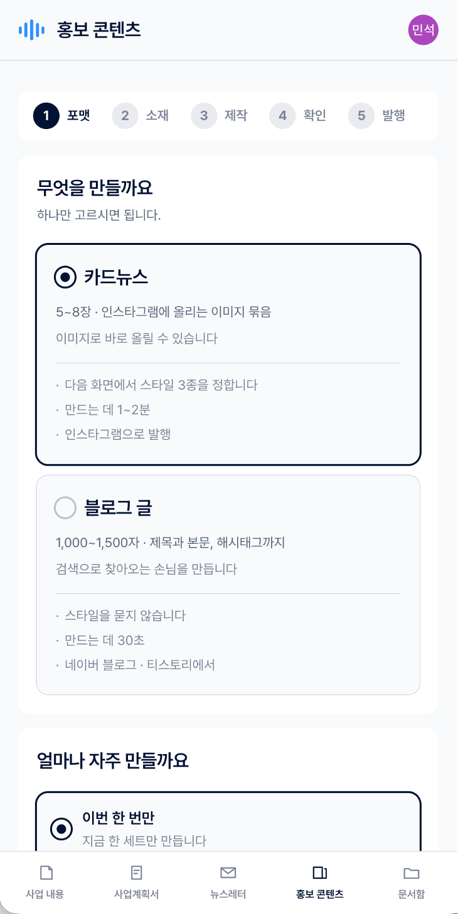
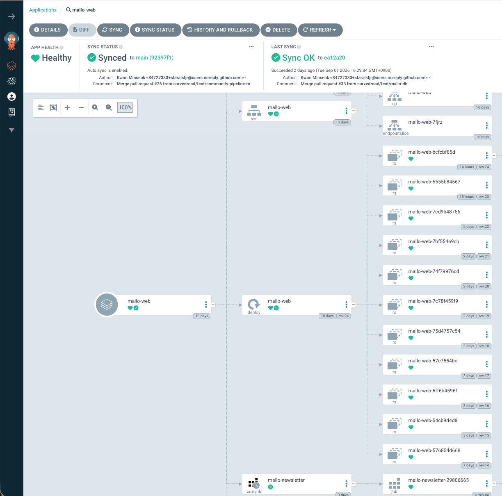
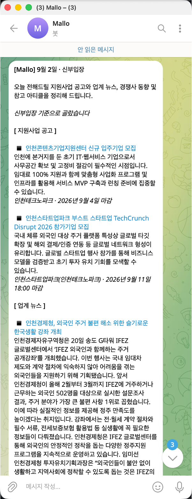
중복 방지와 배치 크기 조절, 부분 실패 격리는 워크플로 도구가 다루는 문제와 같은 성격이었습니다. 완벽한 출처보다 발송이 멈추지 않는 쪽을 택하는 것도 설계 판단입니다.
AWS Solutions Architect Associate로 배운 VPC와 서브넷, ALB, Auto Scaling, RDS 개념을 Terraform으로 직접 구성하고 동작까지 검증한 학습 프로젝트입니다.
10.0.0.0/16 VPC를 Public과 App, DB 3계층으로 나누고 서울 리전 두 가용 영역에 서브넷을 배치했습니다. App과 DB는 private 서브넷에 두어 외부 직접 접근을 막고, App의 아웃바운드만 NAT Gateway로 열었으며 계층 간 접근은 Security Group으로 제한했습니다.
수동으로 서버를 올리면 같은 환경을 반복해서 만들고 지우기 어려워, 전부 코드로 정의했습니다.
망을 나누는 것만으로도 장애와 공격 범위가 줄어듭니다. 인프라는 만들었다로 끝내지 않고 종료와 타임아웃 같은 실패 시나리오로 검증해야 설득력이 생깁니다. 트래픽 부하 테스트와 과금, 스케일 정책까지는 가지 못했고 다음에는 CPU 기반 스케일 정책부터 붙이려 합니다.
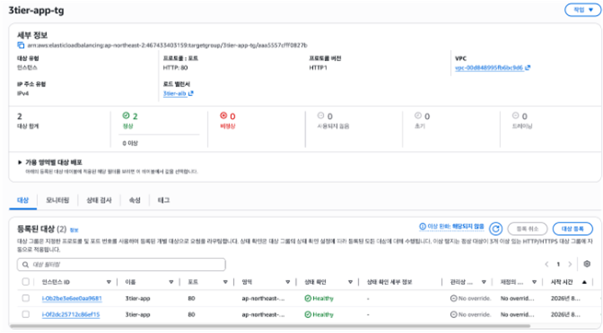
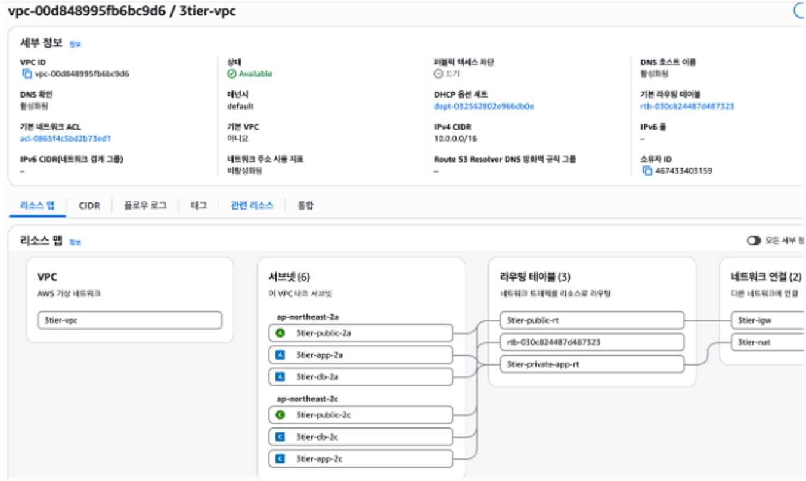
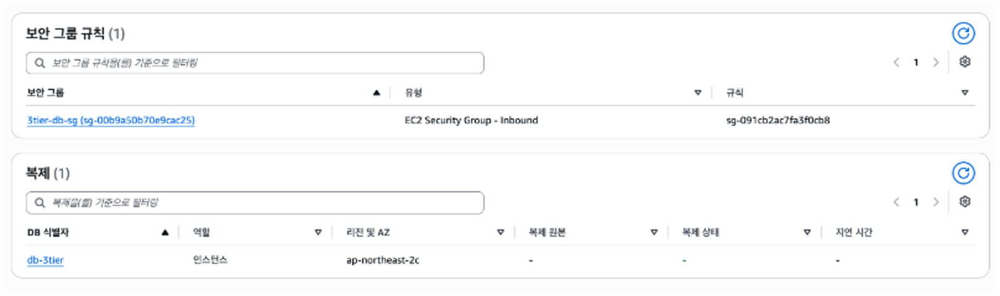
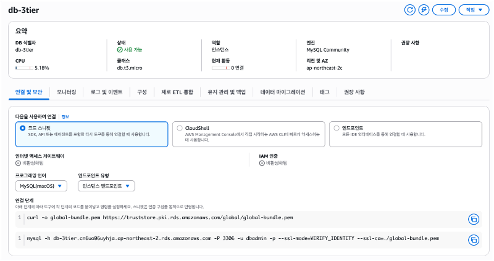